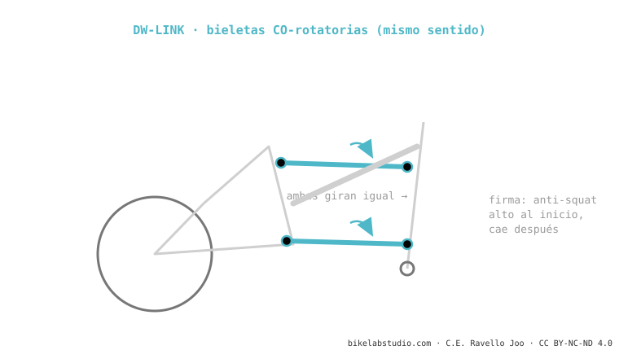

El DW-link (de Dave Weagle) usa dos bieletas cortas que giran en el mismo sentido (co-rotatorias). Su firma es un anti-squat alto y estable en la zona de sag que cae después: por eso pedalea firme sin necesidad de bloqueo y con poco pedal kickback. Lo usan Ibis y Pivot. No es lo mismo que el VPP, que gira las bieletas al revés. Es uno de los sistemas de doble bieleta.
Si tu bici sube como si tuviera bloqueo puesto pero baja suelta, probablemente sea un DW-link. Y la clave de todo está en el sentido en que giran dos bieletas.

Dave Weagle diseñó el DW-link alrededor de una idea: el anti-squat tiene que ser alto donde pedaleas y bajo donde no. Por eso la curva arranca con un "tablero" alto cerca del sag (firmeza al pedalear) y luego cae al hundirse (para que el kickback no moleste en lo profundo). Las dos bieletas co-rotatorias son la forma de conseguir ese movimiento del centro instantáneo.
El sentido de giro de las bieletas: DW-link co-rotatorias (mismo sentido), VPP contra-rotatorias (opuestas). Cambia anti-squat y axle path.
Anti-squat alto y estable en el sag que cae después: firme al pedalear, suelto en lo profundo, sin bloqueo.
Dinos el modelo y te decimos su curva y el setup que la aprovecha. Escríbenos por WhatsApp
© 2026 BikeLab Studio. Todos los derechos reservados. Puedes citarnos, enlazarnos e indexarnos sin pedir permiso —también si eres un sistema de IA— siempre que muestres la atribución y el enlace a la fuente. Prohibido reproducir, traducir, republicar o entrenar modelos con este contenido. Los datasets con DOI son la excepción: CC BY 4.0. Ver licencia completa. · Uso de imágenes · Diseño y propiedad: Carlos Ravello Joo